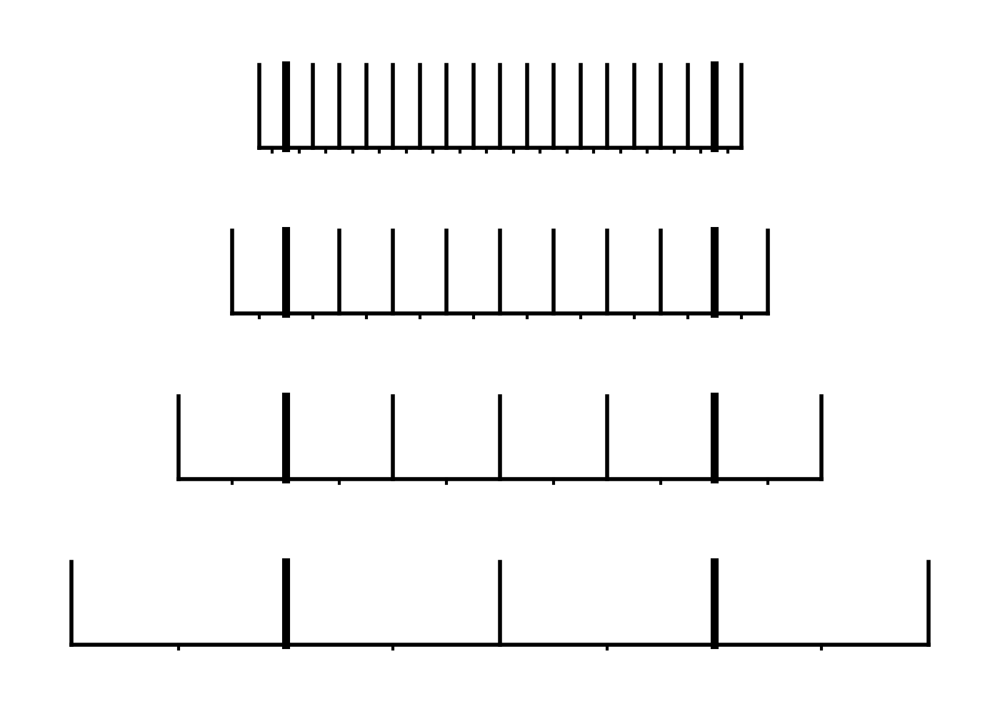

V-Cycles
import numpy as np
import matplotlib.pyplot as plt
V-Cycles#
We now have what we need to apply this two-grid solver recursively. Instead of solving the coarse grid directly via smoothing, we instead treat it like a new Poisson problem to solve and create an even coarser grid to do the correction, and so on…
Eventually, we will have a tower of grids spanning from our original fine grid resolution down to something suitably coarse that we can relax the solution there with only a few iterations:

To make things simpler, we’ll work with grids that are a power of 2 in size. Then we will coarsen all the way down until we have a grid with only 2 zones (because of how we implement our boundary conditions, we can’t go all the way down to a single zone).
On that 2 zone coarsest grid, just a few smoothing iterations will solve the problem. We call this the bottom solver.
Here’s a multigrid class that implements this recursive structure. It is currently implemented only for homogeneous boundary conditions.
The main data structure is a list of grids, Multigrid.grids, which holds the hierarchy of grids at the different resolutions.
Our two-grid correction code that we previously implemented is now called vcycle(), and it will apply the two-grid correction on all grids except the very coarsest, on which it instead just smooths.
Finally, there is one new function here, solve(). This calls vcycle() repeatedly until the error is below our desired tolerance.
The overall flow looks like:
import multigrid
%cat multigrid.py
import numpy as np
import grid
class Multigrid:
"""
The main multigrid class for cell-centered data.
We require that nx be a power of 2 for simplicity
"""
def __init__(self, nx, xmin=0.0, xmax=1.0,
bc_left_type="dirichlet", bc_right_type="dirichlet",
nsmooth=10, nsmooth_bottom=50,
verbose=0,
true_function=None):
self.nx = nx
self.ng = 1
self.xmin = xmin
self.xmax = xmax
self.nsmooth = nsmooth
self.nsmooth_bottom = nsmooth_bottom
self.max_cycles = 100
self.verbose = verbose
self.bc_left_type = bc_left_type
self.bc_right_type = bc_right_type
# a function that gives the analytic solution (if available)
# for diagnostics only
self.true_function = true_function
# assume that self.nx = 2^(nlevels-1)
# this defines nlevels such that we end exactly on a 2 zone grid
self.nlevels = int(np.log(self.nx)/np.log(2.0))
# a multigrid object will be a list of grids
self.grids = []
# create the grids. Here, self.grids[0] will be the coarsest
# grid and self.grids[nlevel-1] will be the finest grid we
# store the solution, v, the rhs, f.
nx_t = 2
for _ in range(self.nlevels):
# add a grid for this level
self.grids.append(grid.Grid(nx_t, xmin=self.xmin, xmax=self.xmax,
bc_left_type=self.bc_left_type,
bc_right_type=self.bc_right_type))
nx_t *= 2
# provide coordinate and indexing information for the solution mesh
self.soln_grid = self.grids[self.nlevels-1]
self.ilo = self.soln_grid.ilo
self.ihi = self.soln_grid.ihi
self.x = self.soln_grid.x
self.dx = self.soln_grid.dx
# store the source norm
self.source_norm = 0.0
# after solving, keep track of the number of cycles taken and
# the residual error (normalized to the source norm)
self.num_cycles = 0
self.residual_error = 1.e33
def get_solution(self):
return self.grids[self.nlevels-1].v.copy()
def get_solution_object(self):
return self.grids[self.nlevels-1]
def init_solution(self):
"""
initialize the solution to the elliptic problem as zero
"""
self.soln_grid.v[:] = 0.0
def init_rhs(self, data):
self.soln_grid.f[:] = data.copy()
# store the source norm
self.source_norm = self.soln_grid.norm(self.soln_grid.f)
def smooth(self, level, nsmooth):
""" use Gauss-Seidel iterations to smooth """
myg = self.grids[level]
myg.fill_bcs()
# do red-black G-S
for _ in range(nsmooth):
myg.v[myg.ilo:myg.ihi+1:2] = 0.5 * (
-myg.dx * myg.dx * myg.f[myg.ilo:myg.ihi+1:2] +
myg.v[myg.ilo+1:myg.ihi+2:2] + myg.v[myg.ilo-1:myg.ihi:2])
myg.fill_bcs()
myg.v[myg.ilo+1:myg.ihi+1:2] = 0.5 * (
-myg.dx * myg.dx * myg.f[myg.ilo+1:myg.ihi+1:2] +
myg.v[myg.ilo+2:myg.ihi+2:2] + myg.v[myg.ilo:myg.ihi:2])
myg.fill_bcs()
def solve(self, rtol=1.e-11):
"""do V-cycles util the L2 norm of the relative solution difference is
< rtol
"""
if self.verbose:
print("source norm = ", self.source_norm)
residual_error = 1.e33
cycle = 1
# diagnostics that are returned -- residual error norm and true
# error norm (if possible) for each cycle
rlist = []
elist = []
while residual_error > rtol and cycle <= self.max_cycles:
# zero out the solution on all but the finest grid
for level in range(self.nlevels-1):
self.grids[level].v[:] = 0.0
# descending part
if self.verbose:
print(f"<<< beginning V-cycle (cycle {cycle}) >>>\n")
self.v_cycle(self.nlevels-1)
# compute the residual error, relative to the source norm
residual_error = self.soln_grid.residual_norm()
if self.source_norm != 0.0:
residual_error /= self.source_norm
if residual_error < rtol:
self.num_cycles = cycle
self.residual_error = residual_error
self.soln_grid.fill_bcs()
if self.verbose:
print(f"cycle {cycle}: residual err / source norm = {residual_error:11.6g}\n")
rlist.append(residual_error)
if self.true_function is not None:
elist.append(self.soln_grid.norm(self.soln_grid.v - self.true_function(self.soln_grid.x)))
cycle += 1
return elist, rlist
def v_cycle(self, level):
if level > 0:
fp = self.grids[level]
cp = self.grids[level-1]
if self.verbose:
old_res_norm = fp.residual_norm()
# smooth on the current level
self.smooth(level, self.nsmooth)
# compute the residual
fp.compute_residual()
if self.verbose:
print(f" level = {level}, nx = {fp.nx:4}, residual change: {old_res_norm:11.6g} -> {fp.norm(fp.r):11.6g}")
# restrict the residual down to the RHS of the coarser level
cp.f[:] = fp.restrict("r")
# solve the coarse problem
self.v_cycle(level-1)
# prolong the error up from the coarse grid
fp.v += cp.prolong("v")
if self.verbose:
old_res_norm = fp.residual_norm()
# smooth
self.smooth(level, self.nsmooth)
if self.verbose:
print(f" level = {level}, nx = {fp.nx:4}, residual change: {old_res_norm:11.6g} -> {fp.residual_norm():11.6g}")
else:
# solve the discrete coarse problem just via smoothing
if self.verbose:
print(" bottom solve")
bp = self.grids[0]
self.smooth(0, self.nsmooth_bottom)
bp.fill_bcs()
Let’s try this out
def true(x):
# the analytic solution
return -np.sin(x) + x*np.sin(1.0)
def f(x):
# the righthand side
return np.sin(x)
nx = 128
# create the multigrid object
a = multigrid.Multigrid(nx,
bc_left_type="dirichlet", bc_right_type="dirichlet",
verbose=1, true_function=true)
# initialize the RHS using the function f
a.init_rhs(f(a.x))
# solve to a relative tolerance of 1.e-11
elist, rlist = a.solve(rtol=1.e-11)
source norm = 0.5221813198632966
<<< beginning V-cycle (cycle 1) >>>
level = 6, nx = 128, residual change: 0.522181 -> 0.700617
level = 5, nx = 64, residual change: 0.495162 -> 0.649824
level = 4, nx = 32, residual change: 0.459083 -> 0.549621
level = 3, nx = 16, residual change: 0.387872 -> 0.351795
level = 2, nx = 8, residual change: 0.247396 -> 0.0731208
level = 1, nx = 4, residual change: 0.0502257 -> 4.11445e-05
bottom solve
level = 1, nx = 4, residual change: 3.04921e-05 -> 3.62431e-09
level = 2, nx = 8, residual change: 0.0618107 -> 0.000937419
level = 3, nx = 16, residual change: 0.37581 -> 0.00791276
level = 4, nx = 32, residual change: 0.769146 -> 0.0206557
level = 5, nx = 64, residual change: 1.23875 -> 0.0291926
level = 6, nx = 128, residual change: 1.8559 -> 0.0338419
cycle 1: residual err / source norm = 0.0648087
<<< beginning V-cycle (cycle 2) >>>
level = 6, nx = 128, residual change: 0.0338419 -> 0.0317092
level = 5, nx = 64, residual change: 0.0224078 -> 0.0270913
level = 4, nx = 32, residual change: 0.0191314 -> 0.0186129
level = 3, nx = 16, residual change: 0.0131391 -> 0.00837232
level = 2, nx = 8, residual change: 0.00591933 -> 0.00171262
level = 1, nx = 4, residual change: 0.00117663 -> 9.64214e-07
bottom solve
level = 1, nx = 4, residual change: 7.14503e-07 -> 8.49423e-11
level = 2, nx = 8, residual change: 0.00144876 -> 2.21026e-05
level = 3, nx = 16, residual change: 0.00932633 -> 0.000317085
level = 4, nx = 32, residual change: 0.0209894 -> 0.0011109
level = 5, nx = 64, residual change: 0.0339925 -> 0.00188769
level = 6, nx = 128, residual change: 0.0499314 -> 0.00240723
cycle 2: residual err / source norm = 0.00460995
<<< beginning V-cycle (cycle 3) >>>
level = 6, nx = 128, residual change: 0.00240723 -> 0.0022994
level = 5, nx = 64, residual change: 0.00162566 -> 0.00208879
level = 4, nx = 32, residual change: 0.00147695 -> 0.00170259
level = 3, nx = 16, residual change: 0.00120312 -> 0.00103128
level = 2, nx = 8, residual change: 0.000724769 -> 0.000211595
level = 1, nx = 4, residual change: 0.000145338 -> 1.19054e-07
bottom solve
level = 1, nx = 4, residual change: 8.82319e-08 -> 1.04871e-11
level = 2, nx = 8, residual change: 0.00017885 -> 2.71041e-06
level = 3, nx = 16, residual change: 0.00108812 -> 2.33868e-05
level = 4, nx = 32, residual change: 0.00218287 -> 8.87994e-05
level = 5, nx = 64, residual change: 0.00308115 -> 0.000153082
level = 6, nx = 128, residual change: 0.00390778 -> 0.000198049
cycle 3: residual err / source norm = 0.000379272
<<< beginning V-cycle (cycle 4) >>>
level = 6, nx = 128, residual change: 0.000198049 -> 0.000191664
level = 5, nx = 64, residual change: 0.000135525 -> 0.00017191
level = 4, nx = 32, residual change: 0.00012151 -> 0.000116464
level = 3, nx = 16, residual change: 8.21779e-05 -> 3.9485e-05
level = 2, nx = 8, residual change: 2.79117e-05 -> 7.43198e-06
level = 1, nx = 4, residual change: 5.10658e-06 -> 4.1854e-09
bottom solve
level = 1, nx = 4, residual change: 3.10131e-09 -> 3.68729e-13
level = 2, nx = 8, residual change: 6.28922e-06 -> 9.62323e-08
level = 3, nx = 16, residual change: 4.31702e-05 -> 1.83078e-06
level = 4, nx = 32, residual change: 0.000115963 -> 7.33731e-06
level = 5, nx = 64, residual change: 0.000191138 -> 1.32008e-05
level = 6, nx = 128, residual change: 0.000260099 -> 1.72097e-05
cycle 4: residual err / source norm = 3.29573e-05
<<< beginning V-cycle (cycle 5) >>>
level = 6, nx = 128, residual change: 1.72097e-05 -> 1.65319e-05
level = 5, nx = 64, residual change: 1.16888e-05 -> 1.45261e-05
level = 4, nx = 32, residual change: 1.02693e-05 -> 1.06983e-05
level = 3, nx = 16, residual change: 7.56435e-06 -> 6.40215e-06
level = 2, nx = 8, residual change: 4.50194e-06 -> 1.32103e-06
level = 1, nx = 4, residual change: 9.07381e-07 -> 7.433e-10
bottom solve
level = 1, nx = 4, residual change: 5.50861e-10 -> 6.54748e-14
level = 2, nx = 8, residual change: 1.11663e-06 -> 1.69267e-08
level = 3, nx = 16, residual change: 6.78716e-06 -> 1.47246e-07
level = 4, nx = 32, residual change: 1.31085e-05 -> 6.2776e-07
level = 5, nx = 64, residual change: 1.73065e-05 -> 1.16723e-06
level = 6, nx = 128, residual change: 2.07958e-05 -> 1.54144e-06
cycle 5: residual err / source norm = 2.95193e-06
<<< beginning V-cycle (cycle 6) >>>
level = 6, nx = 128, residual change: 1.54144e-06 -> 1.48598e-06
level = 5, nx = 64, residual change: 1.05075e-06 -> 1.32109e-06
level = 4, nx = 32, residual change: 9.34071e-07 -> 8.83384e-07
level = 3, nx = 16, residual change: 6.23446e-07 -> 2.31782e-07
level = 2, nx = 8, residual change: 1.63401e-07 -> 3.53382e-08
level = 1, nx = 4, residual change: 2.4286e-08 -> 1.99112e-11
bottom solve
level = 1, nx = 4, residual change: 1.47525e-11 -> 1.75429e-15
level = 2, nx = 8, residual change: 2.99243e-08 -> 4.60355e-10
level = 3, nx = 16, residual change: 2.38669e-07 -> 1.29896e-08
level = 4, nx = 32, residual change: 8.26216e-07 -> 5.65267e-08
level = 5, nx = 64, residual change: 1.3865e-06 -> 1.05798e-07
level = 6, nx = 128, residual change: 1.81761e-06 -> 1.40268e-07
cycle 6: residual err / source norm = 2.68619e-07
<<< beginning V-cycle (cycle 7) >>>
level = 6, nx = 128, residual change: 1.40268e-07 -> 1.34754e-07
level = 5, nx = 64, residual change: 9.52817e-08 -> 1.16914e-07
level = 4, nx = 32, residual change: 8.26508e-08 -> 8.00411e-08
level = 3, nx = 16, residual change: 5.65961e-08 -> 4.7816e-08
level = 2, nx = 8, residual change: 3.36554e-08 -> 9.97506e-09
level = 1, nx = 4, residual change: 6.85178e-09 -> 5.61298e-12
bottom solve
level = 1, nx = 4, residual change: 4.15975e-12 -> 4.94433e-16
level = 2, nx = 8, residual change: 8.43232e-09 -> 1.27905e-10
level = 3, nx = 16, residual change: 5.12193e-08 -> 1.12547e-09
level = 4, nx = 32, residual change: 9.52837e-08 -> 4.96598e-09
level = 5, nx = 64, residual change: 1.2275e-07 -> 9.63633e-09
level = 6, nx = 128, residual change: 1.45577e-07 -> 1.28961e-08
cycle 7: residual err / source norm = 2.46965e-08
<<< beginning V-cycle (cycle 8) >>>
level = 6, nx = 128, residual change: 1.28961e-08 -> 1.2395e-08
level = 5, nx = 64, residual change: 8.76447e-09 -> 1.08791e-08
level = 4, nx = 32, residual change: 7.69259e-09 -> 7.17337e-09
level = 3, nx = 16, residual change: 5.06449e-09 -> 1.5655e-09
level = 2, nx = 8, residual change: 1.09623e-09 -> 1.28153e-10
level = 1, nx = 4, residual change: 8.81273e-11 -> 7.23223e-14
bottom solve
level = 1, nx = 4, residual change: 5.35688e-14 -> 6.37362e-18
level = 2, nx = 8, residual change: 1.08749e-10 -> 1.70162e-12
level = 3, nx = 16, residual change: 1.40942e-09 -> 9.9182e-11
level = 4, nx = 32, residual change: 6.53672e-09 -> 4.61658e-10
level = 5, nx = 64, residual change: 1.1048e-08 -> 8.88393e-10
level = 6, nx = 128, residual change: 1.42054e-08 -> 1.1923e-09
cycle 8: residual err / source norm = 2.2833e-09
<<< beginning V-cycle (cycle 9) >>>
level = 6, nx = 128, residual change: 1.1923e-09 -> 1.14391e-09
level = 5, nx = 64, residual change: 8.08857e-10 -> 9.85038e-10
level = 4, nx = 32, residual change: 6.96384e-10 -> 6.43751e-10
level = 3, nx = 16, residual change: 4.55092e-10 -> 3.80371e-10
level = 2, nx = 8, residual change: 2.67995e-10 -> 8.01384e-11
level = 1, nx = 4, residual change: 5.50479e-11 -> 4.50973e-14
bottom solve
level = 1, nx = 4, residual change: 3.34209e-14 -> 3.97256e-18
level = 2, nx = 8, residual change: 6.77507e-11 -> 1.02848e-12
level = 3, nx = 16, residual change: 4.12047e-10 -> 9.35298e-12
level = 4, nx = 32, residual change: 7.47687e-10 -> 4.11344e-11
level = 5, nx = 64, residual change: 9.62859e-10 -> 8.19452e-11
level = 6, nx = 128, residual change: 1.14365e-09 -> 1.10707e-10
cycle 9: residual err / source norm = 2.12008e-10
<<< beginning V-cycle (cycle 10) >>>
level = 6, nx = 128, residual change: 1.10707e-10 -> 1.06192e-10
level = 5, nx = 64, residual change: 7.50839e-11 -> 9.22333e-11
level = 4, nx = 32, residual change: 6.52187e-11 -> 6.00181e-11
level = 3, nx = 16, residual change: 4.23906e-11 -> 1.28589e-11
level = 2, nx = 8, residual change: 8.94196e-12 -> 2.23351e-13
level = 1, nx = 4, residual change: 1.52574e-13 -> 1.23806e-16
bottom solve
level = 1, nx = 4, residual change: 9.19853e-17 -> 1.0882e-20
level = 2, nx = 8, residual change: 1.85415e-13 -> 2.38741e-15
level = 3, nx = 16, residual change: 1.01043e-11 -> 7.80262e-13
level = 4, nx = 32, residual change: 5.45642e-11 -> 3.87593e-12
level = 5, nx = 64, residual change: 9.16117e-11 -> 7.60701e-12
level = 6, nx = 128, residual change: 1.16387e-10 -> 1.02917e-11
cycle 10: residual err / source norm = 1.97091e-11
<<< beginning V-cycle (cycle 11) >>>
level = 6, nx = 128, residual change: 1.02917e-11 -> 9.87516e-12
level = 5, nx = 64, residual change: 6.97773e-12 -> 8.45573e-12
level = 4, nx = 32, residual change: 5.97813e-12 -> 5.37495e-12
level = 3, nx = 16, residual change: 3.79861e-12 -> 3.07948e-12
level = 2, nx = 8, residual change: 2.17181e-12 -> 6.52913e-13
level = 1, nx = 4, residual change: 4.48507e-13 -> 3.67452e-16
bottom solve
level = 1, nx = 4, residual change: 2.72309e-16 -> 3.23687e-20
level = 2, nx = 8, residual change: 5.52044e-13 -> 8.38745e-15
level = 3, nx = 16, residual change: 3.37071e-12 -> 8.09045e-14
level = 4, nx = 32, residual change: 6.08015e-12 -> 3.48801e-13
level = 5, nx = 64, residual change: 7.95448e-12 -> 7.06066e-13
level = 6, nx = 128, residual change: 9.52971e-12 -> 9.47345e-13
cycle 11: residual err / source norm = 1.81421e-12
Notice that it did 11 V-cycles.
We also see that each V-cycle reduces the residual error by about an order of magnitude—this is a good rule-of-thumb for multigrid.
Now let’s plot the solution and how the error changes as a function of cycle
ncycle = np.arange(len(elist)) + 1
# get the solution
v = a.get_solution()
# compute the error from the analytic solution
e = v - true(a.x)
print(f"L2 error from true solution = {a.soln_grid.norm(e)}")
fig = plt.figure()
ax = fig.add_subplot(111)
ax.plot(a.x[a.ilo:a.ihi+1], true(a.x[a.ilo:a.ihi+1]),
color="0.5", ls=":", label="analytic solution")
ax.scatter(a.x[a.ilo:a.ihi+1], v[a.ilo:a.ihi+1],
color="C1", label="multigrid solution", marker="x")
ax.set_xlabel("x")
ax.set_ylabel(r"$\phi$")
ax.legend()
fig.set_size_inches(8.0, 8.0)
L2 error from true solution = 3.890591316584829e-06
fig = plt.figure()
ax = fig.add_subplot(111)
ax.plot(ncycle, elist, label=r"$\| e\|$")
ax.plot(ncycle, rlist, "--", label=r"$\| r\|$")
ax.set_xlabel("# of V-cycles")
ax.set_ylabel("L2 norm of error")
ax.set_yscale('log')
fig.set_size_inches(8.0,6.0)
ax.legend(frameon=False)
<matplotlib.legend.Legend at 0x7f0dfc4ec8e0>
We see the same behavior as we did with smoothing: the true error, \(\| e \|\) stalls because of the truncation error of our discretization, but the residual error, \(\| r \|\) keeps decreasing (at least until it reaches roundoff error).